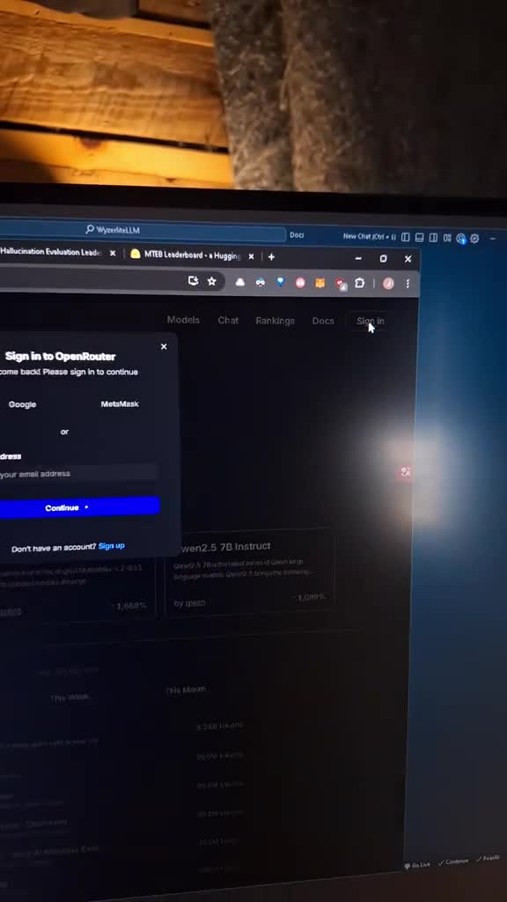
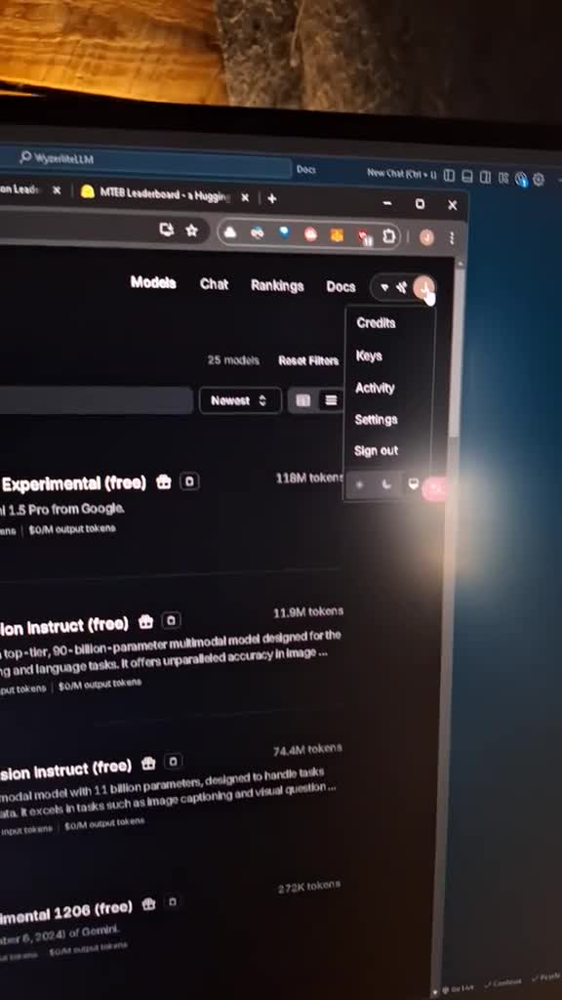
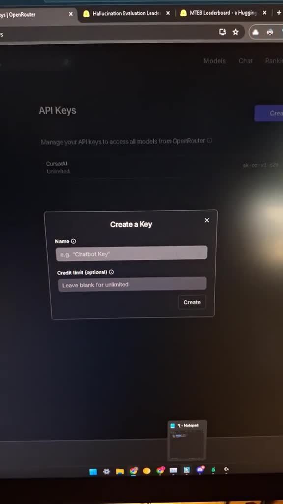
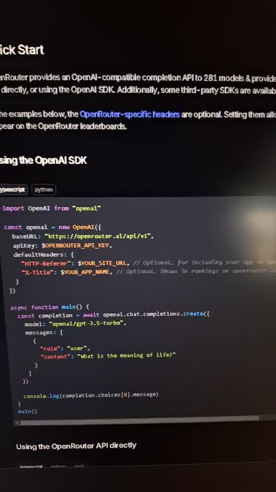
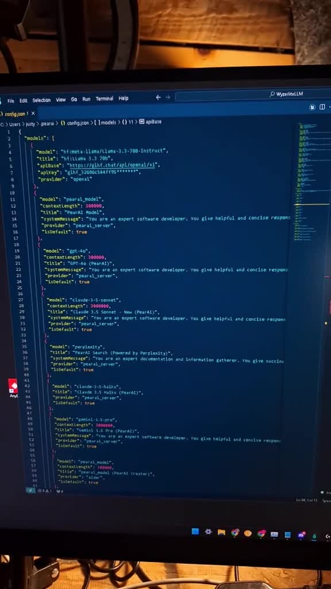
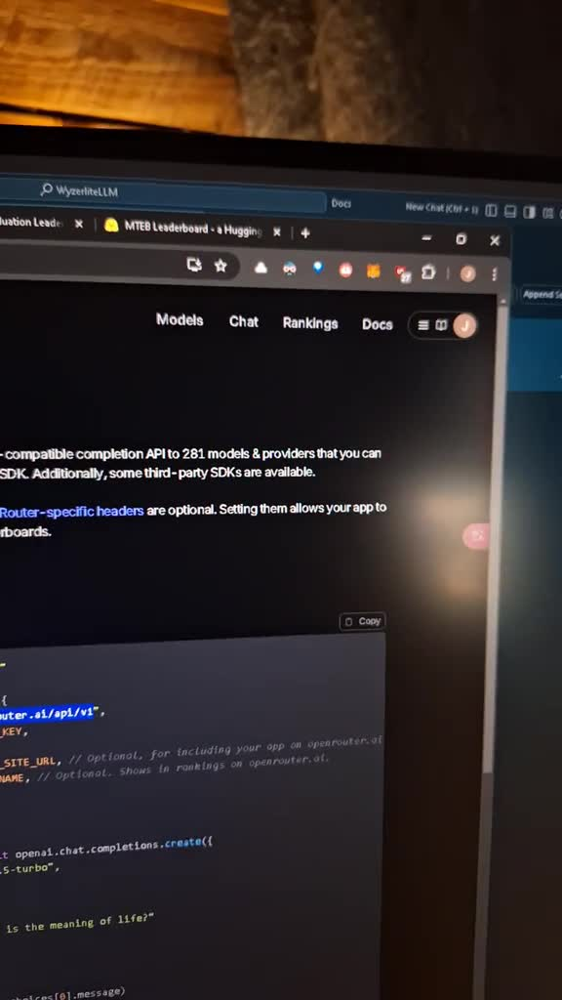
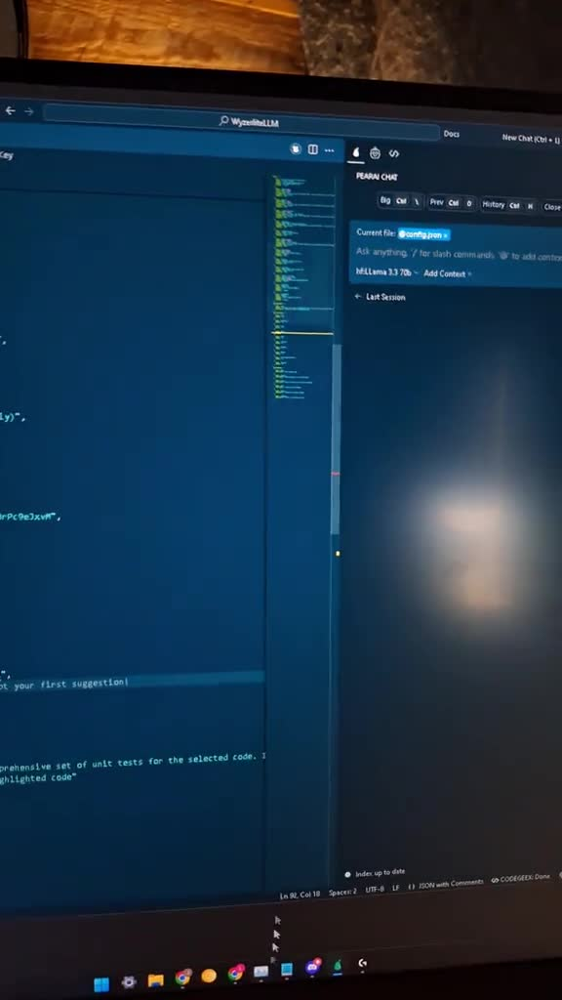

This guide outlines the steps for accessing and utilizing free API keys on OpenRouter.ai. Users must create an account and log in, then filter for free models in the models section. After identifying these models, users can create an API key in their profile, which is essential for authenticating requests. The guide further details how to configure the API by locating the base URL and entering the API key into the configuration file. Finally, it explains how to identify free models in the 'pair' chat interface, ensuring users can effectively utilize the available resources without incurring costs.
To begin using the services offered by OpenRouter.ai, users need to create an account. This is done by visiting the OpenRouter.ai website, signing in, and using a Google account for quick access. Once logged in, users should navigate to the models section and apply a filter to view only the free models available. Understanding how to filter for free models is essential, especially when integrating with other tools, as this will help in identifying which models can be utilized without incurring costs.  
After identifying the free models, the next step involves creating an API key. This is accomplished by accessing the profile section and selecting the keys option. Users should create a new key, assigning it a recognizable name, such as 'pair AI', and ensure they copy it down securely, as it will not be visible again once generated. This key is crucial for authenticating API requests and should be stored safely, such as in a notepad, to prevent loss. 
With the API key in hand, users must locate the base URL necessary for API interactions. This information can be found in the documentation section of the OpenRouter.ai website. Once the base URL is obtained, users should navigate to their application, in this case, 'pair', and initiate the configuration process. This involves accessing the config.json file, where the model settings can be adjusted. A critical feature of this setup is the auto-detection capability, which allows the application to automatically recognize and populate the available models based on the configured settings.


Upon accessing the configuration file, users need to input the base URL and API key into their respective fields. This is done by pasting the base URL and entering the API key, ensuring that the provider is set correctly to 'Open AI', which is compatible with the models being utilized. Users can also customize the display name for the API provider in the 'pair' chat interface. After making these adjustments, it is important to save the configuration to ensure that changes are retained for future use.  
Once the configuration is complete, users can access the 'pair' chat interface, where all available models will be listed. However, to distinguish the free models from the paid ones, users must look for tags or indicators that denote a model as free. These tags typically appear at the end of the model name. For instance, a model like 'metal llama 3.18 B instruct free' would indicate it is available at no cost. Users may need to explore the list to find the specific free models they wish to utilize.
Accessing Free API Keys -
- Create an account on OpenRouter.ai by visiting the website and signing in with a Google account.
- Navigate to the models section and filter to view only free models to identify cost-free options.
Creating and Managing API Keys -
- After identifying free models, create an API key in the profile section by selecting the keys option.
- Assign a recognizable name to the key and store it securely, as it will not be visible again after generation.
Configuring the API for Use -
- Locate the base URL for API interactions in the documentation section.
- Configure the application by accessing the config.json file and adjusting model settings, utilizing auto-detection to recognize available models.
Populating Configuration Settings -
- Input the base URL and API key into the configuration file fields, ensuring the provider is set to 'Open AI'.
- Customize the display name for the API provider and save the configuration to retain changes.
Utilizing and Identifying Free Models -
- Access the 'pair' chat interface to view all available models.
- Look for tags or indicators that denote free models, typically appearing at the end of the model name, to distinguish them from paid options.
API: Application Programming Interface; a set of rules and protocols for building and interacting with software applications.
API Key: A unique identifier used to authenticate a user or application when making API requests.
Base URL: The root address of an API endpoint, used to construct specific API request URLs.
Configuration File: A file that contains settings and parameters for an application, allowing users to customize its behavior.
Free Models: API models that can be accessed without incurring any costs.
Model: A specific implementation within an API that performs a particular function or provides a service.
Tags: Labels or indicators used to categorize or provide additional information about items, such as models in an API.
User Account: An account created by a user to access and utilize services provided by a platform or application.
How do I create an account on OpenRouter.ai? Visit the OpenRouter.ai website and sign in using a Google account for quick access.
How can I filter for free models on OpenRouter.ai? Navigate to the models section and apply a filter to view only the free models available.
What is the process for creating an API key? Access the profile section, select the keys option, create a new key, assign it a recognizable name, and copy it down securely.
Why is it important to copy the API key securely? The API key will not be visible again once generated, so it must be stored safely to prevent loss.
Where can I find the base URL for API interactions? The base URL can be found in the documentation section of the OpenRouter.ai website.
How do I configure the API in my application? Access the config.json file in your application, input the base URL and API key, and set the provider to 'Open AI'.
What is the auto-detection capability in the API configuration? It allows the application to automatically recognize and populate the available models based on the configured settings.
How do I customize the display name for the API provider? You can customize the display name in the 'pair' chat interface after entering the API key.
How can I identify free models in the 'pair' chat interface? Look for tags or indicators that denote a model as free, typically appearing at the end of the model name.
What does a model name like 'metal llama 3.18 B instruct free' indicate? It indicates that the model is available at no cost.